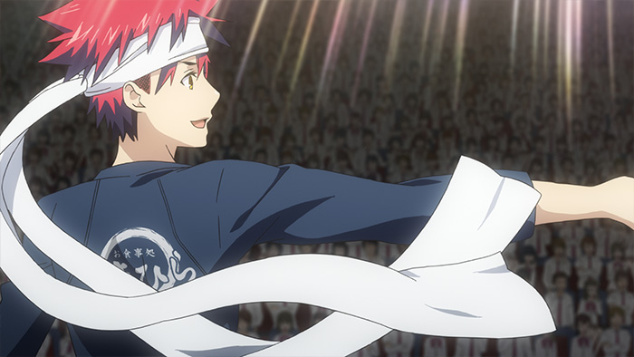
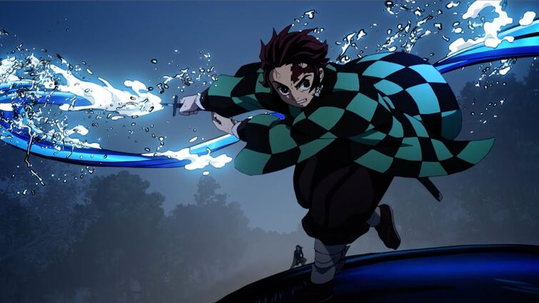
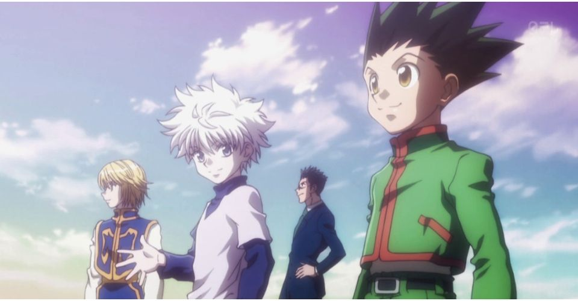
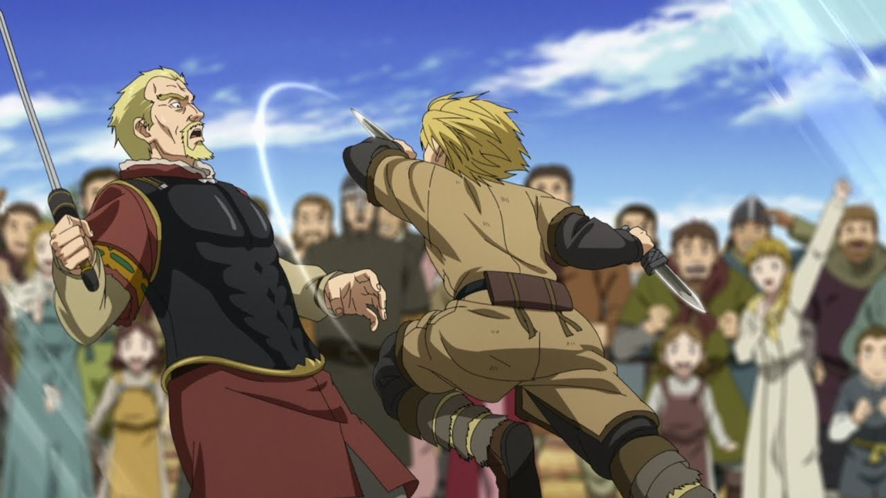

#1
Food Wars
This show deserves first place because of its uniqueness compared to other shows. An action Anime paired with competitions of cooking elevates the scene and the show dramatizes everything really well where it really feel like your in the moment. This would be the show if Gordon Ramsey was animated. As a person who just loves food, but doesn't care about cooking makes me want to take the apron and go whip up a 5 course meal. The show is really inspirational and shows food in its finest light.
#2
Jujutsu Kaisen

Jujutsu Kaisen is a show filled with action and will get you on the edge of your seat with every episode. The show is also balanced with the perfect amount of humour where it doesn't feel like your just watching Fate all over again. If this show was a stock, I would put all my money on it that it would rise beyond all the other shows in the near future (even though it already has).
#3
Demon Slayer
I have so much to say for this show, I don't even know where to begin. This show is ranked 3rd, but it is bound to rise in my rankings with the upcoming season. This kind of show is perfect for anyone who loves butt-clenching fighting scnenes and Nezuko. I meant, uh perfect for anyone who would want a good laugh and enjoy 4K HD 240fps scenes.
#4
Hunter x Hunter
This show is a classic and is a must watch for anyone coming into Anime. If you haven't watch, Watch it!! The show is demonstrated flawlessly and missed nothing out except for more episodes. I was daunted at first with the 175 episodes, but I only wished for more at the end. You will enjoy every episode from it.
#5
Vinland Saga
This shows tells a story of a child who becomes a warrior. The fighting scenes are fast paced, action packed, tensely slow and hard hitting. You get an idea of what's going on at every second of the fight. The show also poses opponents worthy of the main character unlike some shows where the main characters is basically unbeatable.